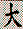
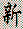

| |
JAPANESE CHARACTERS
There are four different
character sets used for Japanese: hiragana, katakana,
romaji, and kanji. Hiragana and
katakana both contain less than fifty
characters and are purely phonetic writing systems.
They can be used interchangeably, but usually
hiragana is used for text and katakana is used for
loanwords or special emphasis, like italics in
English text. Romaji are simply the familiar
letters you're reading right now. It is the last
character set, kanji, that motivated this
article.
These characters, mostly
borrowed from Chinese, relate to meanings, not
sounds. There are over 6000 kanji in all, but in 1946
the Japanese ministry of education settled on a list
of 1945 characters for common use and 166 for names.
Most kanji have at least two readings: on and kun.
Which reading is used depends on the context, but
usually the Japanese (kun) reading is used for single
kanji and the Chinese (on) reading is used for
compounds.
| character |
common readings |
meaning |
|  |
OO(kii) TAI- -DAI- |
large |
|
NAKA CHUU- |
middle |
|  |
SIN ATARA(shii) |
new |
Japanese verbs and
adjectives are usually written with kanji for the
stem and hiragana for the ending. The format of kanji
dictionary entries usually includes the readings in
hiragana or katakana.
|